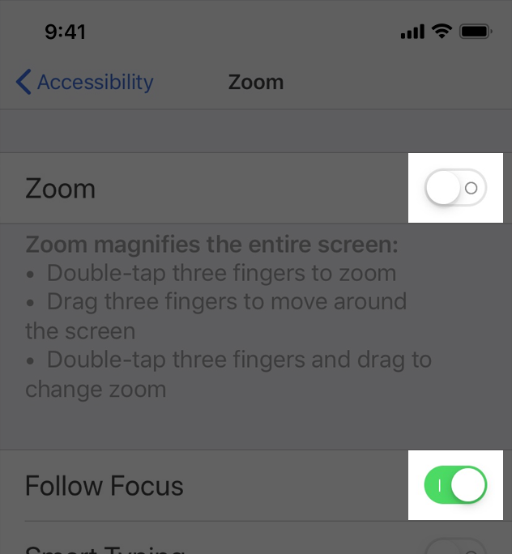

人们会使用 Apple 的无障碍功能/辅助功能（Accessibility）（例如减少透明度、旁白、增加字体尺寸）以适合他们的方式去个性化他们如何与设备交互。一个可用的 app 通过设计支持这些个性化，无论人的能力和人们如何使用他们的设备，让每一个人都能享受绝佳的使用体验。
- 减少透明度示例：点此查看示例视频↗︎
- 旁白示例：点此查看示例视频↗︎
- 按钮形状示例：点此查看示例视频↗︎
目录
障碍和解决方案 Impairments and Accommodations
全世界大约每七个人中就有一个人有影响他们与世界、与设备进行交互的身体残疾或障碍。人们经历身体障碍可能在任何年纪、持续时间不定、严重程度不一。某个状况下的障碍（如开车、在晴朗的天气远足或者在一个安静的图书馆学习这些临时条件）可能会在不同时间影响几乎每个人与设备进行交互的方式。

设计 app 一开始就应该考虑包容性，让每一个人都能使用你的 app。审视下面四个主要的障碍分类以及对应解决它们的辅助功能。
视觉
视觉障碍包括失明、色盲、各种形式的视力丧失以及各种看屏幕不舒服或者困难的情况。对于有障碍的用户来说，Apple 在每个平台上都提供了旁白（Voice Over）功能，并支持显示调节功能例如颜色反转、大文本、缩放和放大器。
听觉
除了各种类型的听力丧失，听力障碍还包括人们不想他们的设备发出大的声响时的情况，例如当他们在剧院中时。Apple 提供了与功能进行听觉交互的替代方式，例如隐藏式字幕、视觉和触感通知、键入以使用 Siri 模式。
肢体和运动
有肢体和运动障碍的人可能在握持或操作设备上有困难。Apple 提供了几种解决方案无需精确的运动控制，就可以去帮助人们使用他们的设备：
- 切换控制（Switch Control）将自适应设备与 iPhone、iPad、Mac 和 Apple TV 集成在一起；
- Siri 帮助人们使用声音控制 app 和设备；
- 辅助触控（Assitant Touch）让标准手势容易执行。
读写能力和学习能力
读写能力和学习能力的障碍包括口语和阅读上有困难、管理复杂性以及保持专注上有困难。为了减少认知负担，为有读写能力和学习能力障碍的人提供帮助，Apple 提供了一些功能，例如朗读屏幕内容（Speak Screen）、打字反馈（Typing Feedback）以及 Safari 阅读器（Safari Reader）。
包容型设计的最佳实践
每个人都能用上和理解的 app 的包容性设计让越来越多的人有机会享受你的 app。下面这三个最佳实践可以帮助你创造一个包容的 app。
在脑子里记住让辅助功能融进你的设计中
辅助功能不只是让那些有残疾的用户能够获取信息，而是让所有人能够获取信息，不论他们的能力或所处环境。时刻记住让辅助功能融进你的设计中意味着优先考虑简洁和感知能力，测试每一个设计决策以确保它没有把有不同能力或者使用不同方式与 app 进行交互的用户排除在外。
- 简洁（Simplicity）：创造熟悉的、一致的交互可以让复杂的任务变简单、易于执行。
- 感知能力（Perceivability）：无论人们通过视觉、听觉或是触觉。确保所有的内容可以被感知到。
支持个性化
你早已在设计 app 时考虑了环境的变化（如设备的方向、屏幕尺寸、分辨率、颜色范围、分屏浏览），因为你想要人们在任何情景、任何支持的设备中都能尽情使用你的 app。只要再付出一小点努力，你就可以让你的 app 支持辅助功能，人们使用这些辅助功能可以个性化他们与设备交互的方式。
当你使用了标准控件去实现你的 app 的 UI，文本和界面元素会自动适配几个辅助功能设置，例如加粗文本、大文本、反转颜色和增强对比度。
审查和测试你的 App 的辅助功能
审查可以检查你的 app 中的每一个元素，给你一个全面的问题列表以待修复。测试帮助你确保所有的用户都可以在你的 app 中完成最重要的任务，不论他们与设备是如何交互的。
当你将辅助功能打开，测试了重要的用户路径，你将会理解使用不同方式与设备进行交互时所遇到的挑战。你也会发现你的 app 中用户体验不好的地方。
例如，在一个社交 app 中一个常见的用户路径是回复一个评论。这个任务可能会包括：
- 读发出的评论；
- 选择一个评论去回复；
- 打开回复页面；
- 编辑回复；
- 发布回复。
对于你的 app 的每一个关键用户路径，打开一个辅助功能，例如旁白、减少动态效果、大文本，确保你可以在用户路径中完成每一个任务而没有遇到困难。在你修复你没有考虑到的所有问题之后，打开另一个不同的辅助功能，再测试一遍用户路径。
在 Xcode 中的辅助功能查看器可以帮助你审查、测试、修复你的 app。
用户交互
像旁白这样的辅助使用技术和像显示调整这样的辅助功能扩展了人们与他们设备的交互方式。因为这些技术和功能与系统提供的交互结合在了一起，在你的 app 中正确地支持系统交互的辅助功能是十分重要的。
手势
- 让所有的控件和交互元素都有一个点击目标，尺寸上至少达到 44pt x 44pt：行动不便的人需要更大的点击目标去帮助他们与 app 进行交互。太小的控件可能会让所有的用户很难去点击。
- 不要覆盖平台的自有手势：不管在使用什么 app，人们期待系统手势（如下滑显示通知中心、系统偏好设置中定义的触控板手势）可以正常工作。
- 在交互上使用简单手势：复杂的手势（例如多指手势、长按或者需要重复按钮）可能对某些人来说是有挑战的。使用最简单的手势可能改善每一个与你的 app 进行交互的人的使用体验。
- 对给予手势的操作提供可替代方案：给可能不能执行某个特定手势的人提供一个其他选择。例如，如果需要在一个表单中滑动删除某一行，你应该给人们一个可以通过编辑模式或者某个条目详情页面上提供一个删除按钮来完成删除条目的可替代方案。
- 在你的 iOS app 中让拖放功能可用：当你在你的 app 中使用辅助功能 API 去识别拖拽来源和放置目标时，辅助功能技术可以帮助人们拖拽屏幕上的条目。
- 不要通过 iOS 上的 3D Touch 功能或者 Apple Watch 上的 Force Touch 功能访问你的 app 的核心功能：并不是每一个人都可以按压屏幕获得由 3D Touch 或者 Force Touch 提供的额外功能。即使人们的设备不能使用 3D Touch 或者 Force Touch，也要确保所有的用户都可以在你的 app 中执行重要的操作。
触感
- 支持系统定义的触感：许多人依赖于触感功能，这可以在人们不能看到屏幕时，帮助人们与 app 进行交互。例如，系统 app 在一个任务成功或失败时或者一个事件要发生时通过触感通知人们。在你的 app 中保持一致地使用系统定义的触感，这样就不会让人们感到困惑。
按钮和控件
- 刻画自定义元素的辅助功能：你可以使用辅助功能特性（UIKit）和辅助功能属性（AppKit）去告知辅助功能技术一个元素是如何表现的。例如，使用一个「button」或者「NSAccessibilityButton」去刻画一个 view 作为一个按钮，那意味着旁白会在「按钮」词语之后读出 view 的描述，这可以告诉人们这个 view 的行为和按钮是相似的。
- 使用一个一致的样式层级去表达按钮的相对重要性：人们可以开启按钮形状，以从周围的内容中更好地辨认出活跃的按钮。当你使用一个一致的按钮样式的层级时，人们可以基于按钮的外观掌握按钮的重要性。例如，最重要的按钮是圆角矩形，并有颜色填充；二级按钮没有颜色填充，但可能使用核心颜色展示一个文本或图形；最不重要的按钮使用了一个下划线样式的文本。
- 优先使用系统提供的开关样式：UIKit 提供了一个开关，它通过开关把手的位置和填充颜色表明了开关的状态。然而对于某些人来说，额外的文字标签使它更容易意识到一个开关现在是开还是关。当你使用提供提供的开关样式时，如果用户开启了开/关标签，iOS 会自动展示开/关图形。

- 考虑给链接一个视觉上的指示，例如一个下划线：使用颜色表明一个链接是可以的，但如果把它作为唯一的链接指示，色盲人群可能就不能意识到这个区别。
用户输入
- 可以让人们通过说话输入信息而不仅是打字：在文本输入区域添加一个听写按钮，可以让人们选择说话作为他们的首选输入方式。如果你创造了一个自定义的键盘，确保为听写功能添加一个麦克风按键。
- 支持使用 Siri 或者 Siri Shortcuts 仅通过声音执行重要的任务。
- 不要阻止用户选择纯文本：许多用户依赖于通过选择文本作为文本转对话（TTS）的输入或者作为查找文本翻译的输入。
导航
- 设计可预测的、有逻辑的、与平台标准保持一致的导航：当人们可以掌握在系统和其他 app 中的导航体验，人们就会更容易学习如何在你的 app 中导航。
使用旁白进行导航
- 确保旁白用户可以导航到每一个元素：旁白从屏幕的元素中获取辅助功能信息以帮助人们理解每个元素的位置以及人们可以做什么。系统提供的 UI 元素默认包括这些辅助功能信息，但是旁白不能帮助人们发现和使用自定义元素，除非你的 app 提供这些信息。
- 通过指定元素之间是如何成组、排序和连接的来改善旁白体验：靠近、对齐和其他情景线索可以帮助正常视力用户感知到屏幕上元素之间的关系，但是这些线索对于需要使用旁白的用户来说并不友好。检查你 app 中元素之间的关系只能被正常视力用户所感知到的地方，并向旁白描述这些关系。
例如，下图中的布局依赖于靠近和居中来表明每个词语是上面的图片的一个标题。然而，如果你不告诉旁白每张图片应该与对应词语成组，旁白就会这样读出来："A large container holding a variety of mangoes. A large container holding many green artichokes. Mangoes come from trees that belong to the genus Mangifera. Artichokes come from a variety of a species of thistle."因为旁白默认情况下会从左到右读出元素。

使用静态文本介绍一个控件是另一种用于正常视力用户的视觉线索。在下面列举的例子中，系统偏好设置告诉旁白文本"Default web browser:"，因为这是弹出按钮的文字标签，所以使用旁白的用户可以搞清楚这个控件的含义。
- 当屏幕上的内容或者布局改变时注意旁白的变化：内容或者布局的突然变化对于旁白使用者将会非常困惑，因为那意味着他们对于当前屏幕的思维脑图不再准确。报告屏幕上的变化十分重要，这样旁白和其他辅助功能技术才可以帮助人们更新对屏幕的理解。
- 在激活会打开一个不同网页或 app 的控件前警告人们：没有警告就改变当前情景会给人们造成困惑，突然强迫人们重建对屏幕上环境的思维模型。
- 对于所有重要的界面元素提供可替代的文本标签：可替代的文本标签在屏幕上是不可见的，但是这些文本标签让旁白用声音描述出了屏幕上的元素，让有视觉障碍的人导航内容更简单。系统提供的控件默认情况下都会包含这个有用的文字标签，但是对于自定义的元素，你需要自己创造自定义标签。例如，如果你创造了一个表示可以自定义评分的按钮，对于这个辅助功能元素，你可能要提供文字标签「评分」。
- 支持旁白转子：使用旁白的用户可以使用屏幕上的一个控件叫做「转子/rotor」，用来通过标题、链接或其他部分的类型来在文档和网页中导航。转子也可以让盲文键盘显示出来。你可以通过让转子识别相关条目，以帮助旁白用户在你的 app 中的相关条目之间导航。
- 在一个 macOS app 中，让人们使用键盘去导航和与屏幕上的所有元素进行交互：理想情况下，人们可以打开全键盘访问，并在你的 macOS app 中只使用键盘执行所有任务。除了辅助功能键盘快捷方式，macOS 还定义许多其他的键盘快捷方式，许多用户会经常用到。为了支持所有的用户，避免在你的 app 中覆盖任何系统定义的键盘快捷方式十分重要。
文本尺寸和字重
当设计一个包容的 app 时，要记住保持文本尺寸、字重和布局的清晰和可读性。
- 使用动态类型，测试你 app 的布局可以适应所有的辅助功能尺寸：动态类型可以让人们选择适合他们工作的尺寸。确认你的设计可以缩放，对于文本和图形在所有的辅助功能字体尺寸下都是可读的。

- 当字体尺寸增加时，避免切割文本：人们可以通过简单滚动就能看到和默认字体尺寸同样数量的文本的情况是最好的。不要切割文本，除非人们可以打开一个单独的页面去阅读余下的内容。
- 当字体尺寸增加时，同时增加有意义的图形的尺寸：如果你使用图形去表达重要的信息，确保图形在大字体尺寸时也是容易看到的。

- 不论用户的字体尺寸选择是什么，保持一个一致的信息层级：例如，当字体尺寸非常大时保持主要的元素顶部对齐，这样人们不会失去对这些元素的跟踪。
- 在你的 app 中使用 regular 到 heavy 级别的字体字重：使用 regular、medium、semi-bold 或者 bold 字体字重，因为它们都是容易被辨认的。避免使用 ultraLight、thin 和 light 字体字重，这些很难看清。
- 当用户开启粗体文本时，确保你的 app 正确响应，看起来没有问题：人们会在设置中打开粗体文本以让文本和图形容易看清。作为回应，你的 app 应该让所有的文本更粗，让所有图形的描边更粗。

- 确保自定义的字体是清晰可读的：自定义的字形有时很难阅读。除非你的 app 对于自定义字体有一个迫切的需求，例如品牌目的或者为了创造一个沉浸的游戏体验，否则最好是使用系统默认字体。如果你使用了自定义字体，确保它是容易阅读的，特别是在小尺寸下。
- 避免全文两端完全对齐：两端完全对齐的文本创造的留白会让很多人很难阅读和聚焦在文本上。左对齐（对于从右向左的文本就是右对齐）为有学习和读写障碍的人（如诵读困难症）提供了一个框架参考。
- 对于较长段落的文本，避免使用斜体或者全部大写的样式：斜体和全部大写用于某些情景下的强调是可以的，但是过度使用这些样式会让文本很难阅读。
颜色和对比度
- 不要仅靠颜色去区分对象或者传达重要信息：如果你的 app 使用颜色去传达信息，确保同时提供文本标签或者图形，这样色盲用户也可以同样理解它。
- 对于文本，倾向于使用系统颜色：当你的文本颜色使用由 UIColor 或者 NSColor 定义的颜色时，文本可以对辅助功能（如反转颜色、增加对比度）设置正确响应。
- 注意色盲用户：许多色盲用户很难从橘色中分辨蓝色或者从绿色中分辨红色（还有一部分很难从灰色中分辨绿色或红色）。避免使用这些颜色组合作为区分两种状态或者值的唯一方式。例如，不要仅使用红色和绿色圆圈去表明离线和在线状态，你可以使用一个红色方形和一个绿色圆形来表示。一些图片编辑软件会包括帮助验证色盲用户的工具。

- 对「反转颜色」设置正确响应：当人们在一个较暗的背景下查看内容时可能会打开反转颜色。在反转颜色的智能反转模式中，图片、视频和全色图标（例如 app 图标和非模板型图片）不会反转，深色的 UI 会依旧保持深色。
- 使用强烈对比的颜色来改善可读性：许多特征会影响对颜色的感知，包括字体尺寸和字重、颜色亮度、屏幕分辨率和光照条件。当你增加视觉元素（如文本、图形和控件）的颜色对比度，你可以帮助更多人在更多的情景下使用 app。为了发现在你的 UI 中相邻的颜色对比度是否满足最小可接受的水平，使用一个基于 WCAG 颜色对比度准则的在线颜色对比度计算器。
- 使用文本尺寸来帮助决定对比度：通常情况下，更小或者更轻字重的文本需要更大的对比度才能保持可读。利用下面提供的值作为指导：

外观效果和动效
虽然像模糊、透明、移动这样的效果时传达信息的有用的方式，但一些人会因此被分散注意力或者感到不舒服，还有一些人完全不会感知到这些效果。避免使用外观效果作为传达重要信息的唯一方式，这样不管人们如何与你的设备进行交互，他们都可以享受你的 app。
透明度和模糊效果
- 当用户打开「减少透明度」辅助功能设置时，改变模糊效果和透明度：例如，模糊内容和透明效果的区域应该变得大部分不透明。最好的结果是，在不透明区域使用一个不同于该区域时模糊或透明时的颜色值。

动效
- 除非对于你的 app 目的时必不可少的，否则不要必须使用动效：通常情况下，人们应该能够不依赖于任何动效就使用你的 app。
- 当「减弱动态效果」辅助功能设置开启时，收紧动效：如果人们会被分散注意力或者在浏览动效（例如放大、缩小、快速转动或者周围的动态）时感到头晕或者恶心，他们就可以打开「减弱动态效果」。为了响应这个设置，考虑收紧你的动态的物理特性，这样它们还可以保持丰富和吸引人，但是可以减弱动态效果。例如：
- 收紧弹簧以减少跳跃效果或者跟着用户的手指轨迹进行 1:1 的运动。
- 避免对在 Z 轴层级的深度变化添加动效；
- 避免对模糊效果添加动效；
- 用淡入淡出替代滑入滑出以避免动效。
- 让人们可以控制视频和其他动效效果：避免在没有提供一个控制按钮或者其他可以控制的控件时自动播放视频或者效果。
- 当展示移动或者闪烁的元素时保持谨慎：虽然微弱的移动和闪烁可以抓住用户的注意力，但这些效果也会让人分心，对于有视力障碍的人这些效果没有用。更糟的是，一些闪烁元素可能会造成癫痫病的发作。在所有的情况中，避免使用移动和闪烁作为传达信息的唯一方式。
内容
稿件、图片、音频和视频提供给人们想从你的 app 中获得的信息。你可以通过努力让表达简单、提供信息的可替代版本来让你的内容对每个人都是可用的。
稿件和图片
- 编辑稿件，使其简单明了：当稿件是直接的、不复杂的、没有错误的时，所有的用户都可以从中受益。
- 对传达信息的所有图片提供可替代的描述：如果你没有描述你的内容中有含义的图片，你就会阻止使用旁白的用户完整体验你的 app。为了创造一个有用的描述，可以通过向能看到这个图片的人讲述一目了然的内容开始。因为旁白会朗读出图片周围的文本和任何说明文字，将焦点聚焦在描述图片本身想要传达的信息上。
- 让信息图表完全可用：提供一个对信息图表的简洁的描述以解释它在传达什么信息。如果人们可以与信息图表进行交互以获得更多或不同的信息，你需要让这些交互对使用旁白的用户也可用。辅助功能 API 提供了表示自定义交互元素的方式，这样辅助功能技术就可以帮助人们使用它。
- 针对于辅助功能技术隐藏仅仅是装饰功能的图片：让旁白功能描述一张仅仅是装饰性的图片可能会浪费用户的时间，增加他们的认知负担，没有任何好处。
- 给每一个屏幕一个单独的标题，提供可以在你的信息层级中识别是哪一部分的标题：当人们打开一个界面时，标题是他们从辅助功能技术中获取到的第一部分信息。为了帮助人们理解你的 app 的结构，为每个屏幕创造一个可以简要地描述它的内容和目的的单独的标题。相似地，人们需要精确的章节标题以帮助他们建立一个每个屏幕的信息层级的思维脑图。
音频和视频
- 提供可隐藏字幕：可隐藏字幕给人们一个视频中音频消息的文字信息的等价物。使用可隐藏字幕可以让你提供同一个内容的多种翻译，允许系统选择匹配用户设置的那个版本。因为可隐藏字幕并不总是可用的，提供普通字幕也很重要。
- 提供声音描述：使用声音描述提供那些只以视觉形式呈现的重要信息的口头描述。
- 考虑提供视频的文本记录：提供一个包含音频和视频信息的完整的视频的文本描述是一个好主意，这样人们可以用不同的方式享受视频。
注：目前文章大部分文字来源于对 HIG 中无障碍功能/辅助功能的翻译，后续可能会补充一些实际应用案例以及开发实例。
参考链接
如果你觉得这篇文章对你有所帮助，欢迎请我喝杯咖啡，感谢你的支持😁